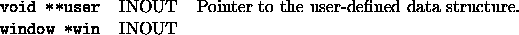

Back to SYMPHONY Home Page
Back to SYMPHONY Home Page
Next: user_interpret_text
Up: User-written functions of the
Previous: user_dg_init_window
void user_dg_free_window(void **user, window *win)
- Description:
-
The user must free any data structures allocated.
- Arguments:
-

- Return values:
-

Ted Ralphs
Thu Jun 8 12:44:45 CDT 2000